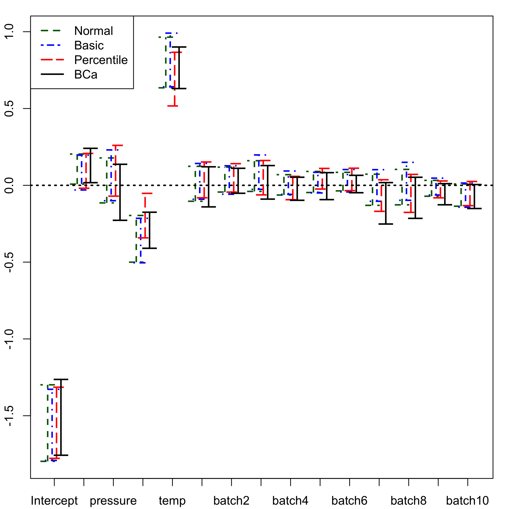

The goal of plsRbeta is to provide Partial least squares Regression for (weighted) beta regression models (Bertrand 2013, http://journal-sfds.fr/article/view/215) and k-fold cross-validation of such models using various criteria. It allows for missing data in the explanatory variables. Bootstrap confidence intervals constructions are also available.
This website and these examples were created by F. Bertrand and M. Maumy-Bertrand.
Installation
You can install the released version of plsRbeta from CRAN with:
install.packages("plsRbeta")You can install the development version of plsRbeta from github with:
devtools::install_github("fbertran/plsRbeta")Example
Using a model matrix
Fit a plsRbeta model using a model matrix.
data("GasolineYield",package="betareg")
yGasolineYield <- GasolineYield$yield
XGasolineYield <- GasolineYield[,2:5]
library(plsRbeta)
modpls <- plsRbeta(yGasolineYield,XGasolineYield,nt=3,modele="pls-beta")
#> ____************************************************____
#>
#> Model: pls-beta
#>
#> Link: logit
#>
#> Link.phi:
#>
#> Type: ML
#>
#> ____Component____ 1 ____
#> ____Component____ 2 ____
#> ____Component____ 3 ____
#> ____Predicting X without NA neither in X nor in Y____
#> ****________________________________________________****
print(modpls)
#> Number of required components:
#> [1] 3
#> Number of successfully computed components:
#> [1] 3
#> Coefficients:
#> [,1]
#> Intercept -3.324462301
#> gravity 0.001577508
#> pressure 0.072027686
#> temp10 -0.008398771
#> temp 0.010365973
#> Information criteria and Fit statistics:
#> AIC BIC Chi2_Pearson_Y RSS_Y pseudo_R2_Y
#> Nb_Comp_0 -52.77074 -49.83927 30.72004 0.35640772 NA
#> Nb_Comp_1 -112.87383 -108.47662 30.57369 0.05211039 0.8498691
#> Nb_Comp_2 -136.43184 -130.56889 30.97370 0.02290022 0.9256771
#> Nb_Comp_3 -139.08440 -131.75572 31.08224 0.02022386 0.9385887
#> R2_Y
#> Nb_Comp_0 NA
#> Nb_Comp_1 0.8537900
#> Nb_Comp_2 0.9357471
#> Nb_Comp_3 0.9432564Additionnal values can be retrieved from the fitted model.
modpls$pp
#> Comp_ 1 Comp_ 2 Comp_ 3
#> gravity 0.4590380 -0.4538663 -2.5188256
#> pressure 0.6395524 -0.4733525 0.6488823
#> temp10 -0.5435643 0.5292108 -1.3295905
#> temp 0.5682795 0.5473174 -0.2156423
modpls$Coeffs
#> [,1]
#> Intercept -3.324462301
#> gravity 0.001577508
#> pressure 0.072027686
#> temp10 -0.008398771
#> temp 0.010365973
modpls$Std.Coeffs
#> [,1]
#> Intercept -1.547207760
#> gravity 0.008889933
#> pressure 0.188700277
#> temp10 -0.315301400
#> temp 0.723088387
modpls$InfCrit
#> AIC BIC Chi2_Pearson_Y RSS_Y pseudo_R2_Y
#> Nb_Comp_0 -52.77074 -49.83927 30.72004 0.35640772 NA
#> Nb_Comp_1 -112.87383 -108.47662 30.57369 0.05211039 0.8498691
#> Nb_Comp_2 -136.43184 -130.56889 30.97370 0.02290022 0.9256771
#> Nb_Comp_3 -139.08440 -131.75572 31.08224 0.02022386 0.9385887
#> R2_Y
#> Nb_Comp_0 NA
#> Nb_Comp_1 0.8537900
#> Nb_Comp_2 0.9357471
#> Nb_Comp_3 0.9432564
modpls$PredictY[1,]
#> gravity pressure temp10 temp
#> 2.049533 1.686655 -1.371820 -1.821977
rm("modpls")Formula support
Fit a plsRbeta model using formula support.
data("GasolineYield",package="betareg")
modpls <- plsRbeta(yield~.,data=GasolineYield,nt=3,modele="pls-beta", verbose=FALSE)
print(modpls)
#> Number of required components:
#> [1] 3
#> Number of successfully computed components:
#> [1] 3
#> Coefficients:
#> [,1]
#> Intercept -4.1210566077
#> gravity 0.0157208676
#> pressure 0.0305159627
#> temp10 -0.0074167766
#> temp 0.0108057945
#> batch1 0.0910284843
#> batch2 0.1398537354
#> batch3 0.2287070465
#> batch4 -0.0008124326
#> batch5 0.1018679027
#> batch6 0.1147971957
#> batch7 -0.1005469609
#> batch8 -0.0447907428
#> batch9 -0.0706292318
#> batch10 -0.1984703429
#> Information criteria and Fit statistics:
#> AIC BIC Chi2_Pearson_Y RSS_Y pseudo_R2_Y
#> Nb_Comp_0 -52.77074 -49.83927 30.72004 0.35640772 NA
#> Nb_Comp_1 -87.96104 -83.56383 31.31448 0.11172576 0.6879757
#> Nb_Comp_2 -114.10269 -108.23975 33.06807 0.04650238 0.8671800
#> Nb_Comp_3 -152.71170 -145.38302 30.69727 0.01138837 0.9526757
#> R2_Y
#> Nb_Comp_0 NA
#> Nb_Comp_1 0.6865226
#> Nb_Comp_2 0.8695248
#> Nb_Comp_3 0.9680468Additionnal values can be retrieved from the fitted model.
modpls$pp
#> Comp_ 1 Comp_ 2 Comp_ 3
#> gravity 0.37895923 -0.42864981 0.50983922
#> pressure 0.61533000 -0.41618828 -0.01737302
#> temp10 -0.50627633 0.47379983 -0.47750566
#> temp 0.30248369 0.60751756 0.28239621
#> batch1 0.50274128 -0.30221156 -0.25801764
#> batch2 -0.14241033 -0.13859422 0.80068659
#> batch3 -0.04388172 -0.17303214 0.48564161
#> batch4 0.11299471 -0.08302689 0.04755182
#> batch5 0.23341035 0.08396326 -0.51238456
#> batch6 0.07974302 0.07209943 -0.30710455
#> batch7 -0.37365392 -0.02133356 0.81852001
#> batch8 -0.12891598 0.16967195 -0.06904725
#> batch9 -0.02230288 0.19425476 -0.57189134
#> batch10 -0.25409429 0.28587553 -0.61277072
modpls$Coeffs
#> [,1]
#> Intercept -4.1210566077
#> gravity 0.0157208676
#> pressure 0.0305159627
#> temp10 -0.0074167766
#> temp 0.0108057945
#> batch1 0.0910284843
#> batch2 0.1398537354
#> batch3 0.2287070465
#> batch4 -0.0008124326
#> batch5 0.1018679027
#> batch6 0.1147971957
#> batch7 -0.1005469609
#> batch8 -0.0447907428
#> batch9 -0.0706292318
#> batch10 -0.1984703429
modpls$Std.Coeffs
#> [,1]
#> Intercept -1.5526788976
#> gravity 0.0885938394
#> pressure 0.0799466278
#> temp10 -0.2784359925
#> temp 0.7537685874
#> batch1 0.0305865495
#> batch2 0.0414169259
#> batch3 0.0677303525
#> batch4 -0.0002729861
#> batch5 0.0301676274
#> batch6 0.0339965674
#> batch7 -0.0337848600
#> batch8 -0.0132645358
#> batch9 -0.0173701781
#> batch10 -0.0587759166
modpls$InfCrit
#> AIC BIC Chi2_Pearson_Y RSS_Y pseudo_R2_Y
#> Nb_Comp_0 -52.77074 -49.83927 30.72004 0.35640772 NA
#> Nb_Comp_1 -87.96104 -83.56383 31.31448 0.11172576 0.6879757
#> Nb_Comp_2 -114.10269 -108.23975 33.06807 0.04650238 0.8671800
#> Nb_Comp_3 -152.71170 -145.38302 30.69727 0.01138837 0.9526757
#> R2_Y
#> Nb_Comp_0 NA
#> Nb_Comp_1 0.6865226
#> Nb_Comp_2 0.8695248
#> Nb_Comp_3 0.9680468
modpls$PredictY[1,]
#> gravity pressure temp10 temp batch1 batch2
#> 2.0495333 1.6866554 -1.3718198 -1.8219769 2.6040833 -0.3165683
#> batch3 batch4 batch5 batch6 batch7 batch8
#> -0.3165683 -0.3720119 -0.3165683 -0.3165683 -0.3720119 -0.3165683
#> batch9 batch10
#> -0.2541325 -0.3165683Information criteria and cross validation
data("GasolineYield",package="betareg")
set.seed(1)
bbb <- PLS_beta_kfoldcv_formula(yield~.,data=GasolineYield,nt=3,modele="pls-beta",verbose=FALSE)
kfolds2CVinfos_beta(bbb)
#> ____************************************************____
#>
#> Model: pls-beta
#>
#> Link: logit
#>
#> Link.phi:
#>
#> Type: ML
#>
#> ____Component____ 1 ____
#> ____Component____ 2 ____
#> ____Component____ 3 ____
#> ____Predicting X without NA neither in X or Y____
#> ****________________________________________________****
#>
#> NK: 1
#> [[1]]
#> AIC BIC Q2Chisqcum_Y limQ2 Q2Chisq_Y
#> Nb_Comp_0 -52.77074 -49.83927 NA NA NA
#> Nb_Comp_1 -87.96104 -83.56383 -1.121431 0.0975 -1.121431
#> Nb_Comp_2 -114.10269 -108.23975 -5.291744 0.0975 -1.965802
#> Nb_Comp_3 -152.71170 -145.38302 -11.583916 0.0975 -1.000068
#> PREChi2_Pearson_Y Chi2_Pearson_Y RSS_Y pseudo_R2_Y
#> Nb_Comp_0 NA 30.72004 0.35640772 NA
#> Nb_Comp_1 65.17044 31.31448 0.11172576 0.6879757
#> Nb_Comp_2 92.87255 33.06807 0.04650238 0.8671800
#> Nb_Comp_3 66.13838 30.69727 0.01138837 0.9526757
#> R2_Y
#> Nb_Comp_0 NA
#> Nb_Comp_1 0.6865226
#> Nb_Comp_2 0.8695248
#> Nb_Comp_3 0.9680468Bootstrap of the coefficients
Computing bootstrap distributions
data("GasolineYield",package="betareg")
set.seed(1)
GazYield.boot <- bootplsbeta(modpls, sim="ordinary", stype="i", R=250)Boxplots of the bootstrap distributions
plsRglm::boxplots.bootpls(GazYield.boot)
Confidence intervals for the coefficients of the model based on the bootstrap distributions
plsRglm::confints.bootpls(GazYield.boot)
#>
#> Intercept -1.79344379 -1.298344159 -1.820910539 -1.298811257 -1.80654654
#> gravity 0.01927751 0.203207700 0.009687132 0.207137136 -0.02994946
#> pressure -0.10284957 0.158899010 -0.095122794 0.205604518 -0.04571126
#> temp10 -0.50396889 -0.177603439 -0.520653497 -0.184002462 -0.37286952
#> temp 0.63958439 0.963623548 0.658889299 1.002068184 0.50546899
#> batch1 -0.09222398 0.110336215 -0.099261768 0.106680396 -0.04550730
#> batch2 -0.04513338 0.126556137 -0.059420084 0.119437955 -0.03660410
#> batch3 -0.04255156 0.157619185 -0.038503175 0.177505160 -0.04204445
#> batch4 -0.05292024 0.065545216 -0.047023003 0.081938870 -0.08248484
#> batch5 -0.04251041 0.078338536 -0.041090268 0.078484689 -0.01814943
#> batch6 -0.02959175 0.082854597 -0.031393204 0.104052342 -0.03605921
#> batch7 -0.13595057 0.097613550 -0.125280057 0.127028728 -0.19459845
#> batch8 -0.11677718 0.084955543 -0.116202080 0.101367639 -0.12789671
#> batch9 -0.06966369 0.023673543 -0.070353628 0.028700049 -0.06344040
#> batch10 -0.14231213 0.006802744 -0.142929452 0.007651461 -0.12520329
#>
#> Intercept -1.28444726 -1.80046767 -1.282289852
#> gravity 0.16750055 0.02817987 0.189061113
#> pressure 0.25501605 -0.07071644 0.140622124
#> temp10 -0.03621849 -0.42413912 -0.175831698
#> temp 0.84864788 0.64173410 0.941303333
#> batch1 0.16043487 -0.13892632 0.100909676
#> batch2 0.14225394 -0.03921924 0.141666087
#> batch3 0.17396388 -0.08110506 0.157875292
#> batch4 0.04647703 -0.06253836 0.077670517
#> batch5 0.10142552 -0.02899872 0.075247803
#> batch6 0.09938634 -0.06114337 0.066367369
#> batch7 0.05771034 -0.15688005 0.078620504
#> batch8 0.08967301 -0.13986427 0.063261668
#> batch9 0.03561327 -0.08371923 0.016030629
#> batch10 0.02537762 -0.14907794 -0.004437664
#> attr(,"typeBCa")
#> [1] TRUEPlot of the confidence intervals for the coefficients of the model based on the bootstrap distributions
plsRglm::plots.confints.bootpls(plsRglm::confints.bootpls(GazYield.boot))